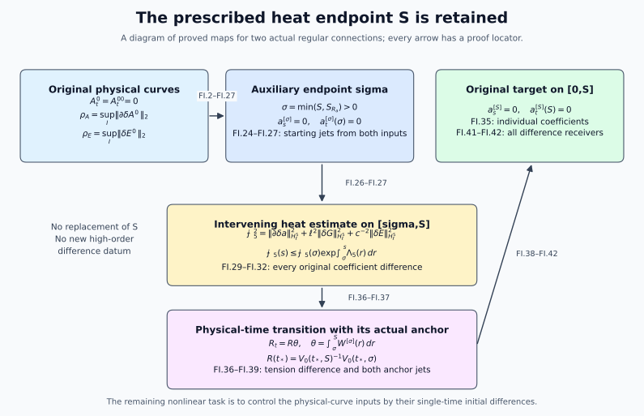

Comparing
heat extensions on the prescribed interval
This Unit 9 chapter estimates two regular heat extensions from their
actual physical-curve differences. It gives all weighted potential,
curvature and heat-curvature bounds used by the difference equations.
When an auxiliary short heat interval is needed, an explicit energy
estimate and an anchored gauge transformation return to the original
endpoint
.
Work with the two actual regular physical temporal-gauge connections
on the same compact physical interval
,
containing
,
and their existing dynamic caloric extensions on the original
.
The spatial base is
,
the gauge group is the original compact matrix group in its fixed
unitary representation, the physical speed is the original
,
and
(FI.1)
Connections have the derivative-regular
representatives used in HC/HD, rather than arbitrary representatives
modulo constants. All derivatives below are full ordered spatial tuples;
all output and matrix labels are retained. Field norms use
Hilbert–Schmidt norm. Undifferentiated gauge suprema use matrix operator
norm. A unitary gauge has operator norm one, its difference has operator
norm at most two, and derivatives of its inverse are the adjoints of its
derivatives. We use
,
with the corresponding contracted full-tuple estimate. No dimension of
the representation is inserted into these inequalities.
For local construction choose the reference radius and original heat
endpoint as follows:
(FI.2)
The component
of the strict-radius set containing
is open relative to
.
It need not be open in
if it contains an endpoint of a closed
.
On a compact interval
containing
,
define
(FI.3)
The original conserved curvature bounds give
.
We never replace
by a differently scaled field. For an open physical interval the
arguments hold on each compact
;
a uniform estimate up to an omitted endpoint requires the displayed
individual quantities to remain bounded there.
Let
be the DeTurck spatial solution,
,
and let
solve
(FI.4)
If
is the dynamic caloric connection with the original physical datum, its
HD time gauge
satisfies
(FI.5)
Here and throughout
.
Substitution of the time component of this action gives
the last term cancels when differentiating
.
Also
is the identity for every
,
so
.
Thus
is exactly the prescribed caloric-temporal connection, with
,
and not merely some gauge-equivalent connection. The primed construction
has the identical two anchor locations.
2.
Local DeTurck differences, with no higher difference datum
Write the original multilinear maps as
(FI.6)
This is a telescoping identity in the original noncommuting fields;
expanding
recovers every quadratic and cubic difference term. For an ordered word
,
the derivative of a product is the sum over subsets of its positions, or
ordered partitions for a triple. Grouping equal subset sizes gives
binomial or multinomial coefficients without deleting any derivative
word.
Let
(FI.7)
Put
,
,
and define
(FI.8)
The initial contraction HC.29–HC.31 has Lipschitz factor at most
:
indeed
and
,
and the heat solver contributes its stated factor two. The free datum
gradient contributes at most twice its norm, giving
.
The order-one weighted energy and its differentiated quadratic and cubic
terms give precisely HG.19–HG.20, hence FI.8. In particular these are
actual difference estimates, not an interpolation of individual
estimates.
For completeness the all-order finite continuation of these arrays is
the following. For
set
(FI.9)
To define
,
choose the first largest entry of
,
decrease its index by one in its own array, and multiply the resulting
three entries. All referenced indices are at most
.
In the quadratic term, the zero-derivative coefficient is in
,
using
.
For the other terms place the smaller derivative order in
,
using
,
and the other in
,
using
.
The remaining heat factor is
.
In the cubic term use three
factors, and put the selected largest derivative in the heat
norm; the remaining factor is
.
The displayed generous full-tuple coefficients are HP.5 and HP.9.
Pairing
’s
equation with
gives exactly
(FI.10)
For
its weighted initial term vanishes. Parseval uses the original measure
and the full tuples. Young’s inequality, followed separately by the
endpoint supremum and integral, yields FI.9 and
,
.
Consequently
(FI.11)
Each
is degree one in
.
3.
The time-gauge coefficient is constructed, not supplied as a new
datum
Here is the finite forced-heat operation used below. Suppose the
already derived equation
has
(FI.12)
where the last sum is finite and all its exponents belong to
,
and a proved bound is
.
Define
(FI.13)
For
,
.
For
,
set
,
,
and
(FI.14)
Then
.
To verify this operation fix the actual evaluation point
and divide
into
equal pieces of length
.
In each piece use the sum of the first
derivative norms weighted by powers of this fixed
,
together with the next derivative multiplied by the square root of
elapsed heat time. The heat kernel has
gradient norm
.
The four Duhamel integrals are bounded by
;
the middle singular convolution is the beta integral
.
The drift contribution is at most
,
and the lower-order contribution is at most
.
Absorbing their sum leaves FI.14. At a derivative-gain step the endpoint
weight costs
;
the first
steps propagate order zero and the last
gain one order each. No high derivative at zero heat time is used.
Differentiate the DeTurck spatial equation in physical time. With
,
(FI.15)
Its FI.12 constants are
.
Pairing with
,
the drift is bounded by
.
Young with half the dissipative term and the cubic term gives
(FI.16)
For
,
keep this operator with coefficient
.
Its forcing has the two quadratic placements
and the six cubic placements obtained by changing one of the two
coefficient slots in each of the three displayed cubics. Full-tuple
bounds are
(FI.17)
Thus
.
The energy inequality for a forced equation is first applied to
,
then
;
this justifies it at a zero norm as well.
The actual dynamic DeTurck time component satisfies the complete
equation
(FI.18)
Indeed expand
with
,
.
The terms
occur on both sides, as do
;
after cancellation the displayed two drift terms and all cubic terms
remain. The homogeneous operator has
.
Its energy exponential is
.
Define
(FI.19)
All sums have the indices specified in their upper row. The exact
difference forcing for FI.18 is
This verifies every term in FI.19, which bounds the full endpoint
jets of
and its difference. In particular no additional electric spatial
derivative has been introduced at heat time zero.
4. The
complete affine gauge terms and local bounds
Here are all the gauge constants needed to reconstruct the missing
display. Put
(FI.20)
The heat ODE is integrated backward from its common endpoint. Its top
differentiated term is right multiplication by a skew-adjoint
coefficient and is removed by the unitary propagator. The remaining
terms give
and
.
The first integral is bounded by
.
The product integral is bounded after weighting by
;
for
this uses
.
This proves the recurrence for every finite
,
not just the two orders needed locally. The same unitary argument in
physical time proves the stated
bounds in both directions from
;
direct integration of
gives the coefficient one on
.
Product differentiation of
gives
,
and hence
and the corresponding
bound for its difference.
The exact affine connection difference is
Define the original receivers
,
,
with suprema over
.
Their complete bounds are
(FI.21)
For the last line differentiate each of the two affine terms once.
The two terms with one derivative on each gauge have weight
,
hence exactly the displayed
.
Terms with two derivatives on one gauge give
.
This also verifies that omitting the affine part would be a mathematical
error.
Curvature transforms by conjugation. With the full nine-component
tuple, set
.
Since
(FI.22)
The independently valid potential-based bound is
,
with the individual original weighted potential constants. Its receiving
locator is ED.4.
The DeTurck heat curvature is
(FI.23)
The linear part has Fourier symbol
,
whose operator norm is
;
it contributes
,
not twice that quantity. The quadratic parts contribute
,
and the cubic term uses three
factors. This proves the first two estimates for all finite
.
The last line is the full three-placement derivative formula for
.
At
it is
at
it is
The LG receivers are therefore
and
,
retaining their original powers of
.
Finally
gives
.
This is the actual
datum receiver; it does not assert the separate ED fractional heat-datum
bound.
5.
An auxiliary heat time without changing the prescribed endpoint
We now extend the local estimate to the entire prescribed heat
interval. Keep the original
,
original reference-time construction and original target representative
.
Choose a finite auxiliary radius
(FI.24)
This changes neither a coordinate nor the target
.
FI.2–FI.23 apply on all of
to a second caloric-temporal representative
,
using
in their numerical recurrences and the original physical differences
FI.3 with
.
If
,
uniqueness of the heat and physical-time gauges identifies the result
with the target and the proof is finished. Suppose
.
The existing dynamic caloric extension
on
is retained. Solve
,
with
,
and define
on all of
.
On
uniqueness identifies it with the local construction already estimated.
This construction requires no DeTurck continuation beyond
.
The connection remains in its
representative since
and positive-heat
has finite
norms. Both the equality and its primed version are equalities of these
representatives.
We will supply every difference input at
by the local recurrences. The following explicit finite rules make that
assertion verifiable also at the higher finite orders used in the
extension. In FI.19–FI.20 now use endpoint
.
For all
,
bounds for the physical gauge
are
(FI.25)
Here
bound
;
they do not replace the unrelated heat-integration constant called
in FI.20. The scope of FI.25 distinguishes these symbols. For clarity
they may be stored as T_L2[k] in a numerical evaluation.
The estimates follow from the differentiated physical-time ODE and its
unitary propagator, putting the
forcing in
and other coefficients in
.
Also
,
.
Positive derivative
norms are bounded by
,
and their differences by the corresponding expression with
.
This proves all finite orders from the same two physical difference
inputs. At orders one and two one can retain the sharper FI.20 values in
place of these larger recurrences.
Here is an exact algorithm for the starting
jets, avoiding an unavailable
norm of the connection. At
,
with all spatial derivatives zero, so
(FI.26)
For a derivative of order
of the first conjugation, sum over all
with
,
coefficient
.
If
,
use the bound
for the middle
factor, and
for its gauge factors. If
,
at least one of
is positive: choose the first positive one, put that gauge derivative in
using FI.25, put
in
with bound
,
and the other gauge factor in
.
For its difference use the three telescoping placements, replacing
exactly one factor by its difference array; in particular the middle
difference bound is
.
For the affine term sum over
,
coefficient
,
put
in
and
in
;
its difference has the two corresponding placements. Denote the
resulting complete positive sums by
.
For curvature conjugations every middle jet is already in
.
For
use
and
.
For
use
(FI.27)
The three-placement multinomial sum with outer factors
and their differences gives bounds
for the full
jets. Thus FI.25–FI.27 are finite arithmetic instructions for every
starting jet; they introduce no higher physical difference datum.
6. The intervening
heat difference estimate
Fix the original length parameter
used in the physical Sobolev spaces. Write
(FI.28)
The identity is for full ordered tuples, not an independently
weighted multi-index norm. The bound
follows by Fourier Cauchy–Schwarz and the exact integral
In this section suppress only the endpoint superscript
,
not any field or contribution, and put
,
,
.
Both original curvatures
and
obey
(FI.29)
These equations are obtained by expanding
in the caloric gauge and taking the telescoping difference; CF.14 and
ES.5 give the two identical original heat equations. Every
quadratic-in-difference contribution is present inside the unprimed
factors. In particular
,
with no elliptic inversion of the connection difference.
We specify finite product constants rather than invoking an
unspecified Sobolev product bound. Let
,
and let
(FI.30)
For
,
Sobolev gives
,
and FI.28 gives
.
The ordered product rule and Hölder prove
,
and a bound
for every ordering of a triple containing one factor of each of
.
These bounds hold also for the corresponding contractions, by full-tuple
Cauchy–Schwarz. Thus no
norm of
or
has been assumed.
Set
(FI.31)
These are coefficients of an auxiliary energy, with the original
fields and original
unaltered. The first line bounds
by
.
In the second line the drift costs
,
the divergence costs
,
and the two curl terms inside
together cost
.
For each of
,
the nested coefficient term costs four and the curvature coefficient
term costs eight. Their sum is twelve. This accounts for every term in
FI.29.
Pair the two heat equations in
and differentiate the first term of
using
.
The drift inequalities are
.
The connection term is
The two forcing terms sum to at most
Consequently the complete useful differential inequality and its
integrated form are
(FI.32)
All terms in the last line have already been constructed in
FI.25–FI.27. Positive heat time makes each individual coefficient in
FI.31 finite on the compact domain. The exact transfer to the original
representative, given next, shows that this assertion does not hide a
new difference estimate.
7.
Individual coefficient inputs are in the original representative
It is useful to compute FI.31’s individual coefficients entirely from
the already given target
.
The inverse transition
,
mapping this target to
,
satisfies
(FI.33)
At zero heat time the original vacuum Gauss constraint is
.
Curvature transforms by conjugation, so
,
and both difference boundary values are zero as well. The full
time-potential identities remain
and
,
with their original oriented endpoints. In particular FI.33 is their
value at
,
not a new boundary prescription. This is an individual construction
only. Put
,
taking the maximum with its primed counterpart. At the reference
physical time, the original construction on
gives
,
for the jets of
:
it is the inverse of the original backward heat gauge at
.
Define recursively
(FI.34)
The unitary ODE proves these bounds on
.
For each original individual spatial jet
and curvature jet
,
,
the full gauge product gives the finite bounds
(FI.35)
The quantities on the right are actual individual positive-heat
norms; they are finite for the regular solutions in question, and the
accepted individual ordinary heat and wave bounds may be substituted
whenever their corresponding data bounds are being used. Derivatives of
can equivalently be computed from
,
so only the original
jets are required. An explicit sufficient finite list for
is the target connection’s
jets through eight and the target
jets through eight in
.
Indeed FI.31 needs the auxiliary connection through order six; its
affine transformation needs
through seven; FI.34 therefore needs
through seven, which follows from the original
through eight and connection through seven. No undifferentiated
norm of the connection is in this list. If the stated suprema are
evaluated by Morrey–Sobolev from
jets, retain the further two derivatives appearing in that explicit
inequality. No norm of any difference is used to define these
coefficients, and no smallness of
is required.
8.
Tension difference and the nonidentity transition anchor
Take
in FI.32 and write
with its explicit majorant from that equation and FI.35. Since
,
the exact difference identity is
(FI.36)
The spatial divergence has norm at most the full gradient norm in
these
Fourier spaces. FI.30,
,
and FI.31 give
(FI.37)
Thus
and the individual jets are bounded by
.
Here
,
so the Fourier embedding is justified. The integral has precisely its
original endpoints and positive sign because
.
The forward transition to the target is
(FI.38)
In particular its anchor is generally not the
identity. The reference-time FI.20 construction supplies
,
for
,
and
.
The last bound integrates the zero-order difference heat ODE only from
to
;
it retains the sharper finite-endpoint factor. All reference arrays use
the original reference radius and original
,
not
.
Define
(FI.39)
Here
denote the transition-gauge bounds, not FI.20’s differently scoped
weighted bounds. To prove them differentiate
.
For example the first difference equation is
The second derivative has the six corresponding forcing terms, with
the two mixed placements each carrying coefficient two. Unitarity
handles the homogeneous right multiplication. Integrating the individual
first-derivative estimate once more yields the coefficient one on
.
Initial derivatives in FI.38 remain in every formula. This proves the
transition difference without presupposing a nonlinear
solution-difference estimate.
9. All
original receivers on the full original interval
We finish by giving direct bounds with the original weights, so the
construction is an actual receiving estimate. Let
.
The full-interval receivers in the auxiliary representative can be
chosen as
(FI.40)
Here the local quantities use endpoint
,
while
and its primed version are the unweighted individual
bounds on
from FI.35. Indeed the homogeneous Morrey–Sobolev inequalities give
and
.
The curvature identity in FI.29 gives the third row, and
gives the fourth. At the shared endpoint both estimates hold; using
their maximum bounds the union of the two original subintervals without
changing any weight.
Let
be the maxima of the corresponding two individual full-interval bounds.
They are computed by the same union rule: take the local individual
FI.11/FI.20/FI.23 product bounds and the positive-heat jets FI.35
multiplied by
,
respectively. Then the target connection
satisfies the following complete estimates:
(FI.41)
To verify the second row, differentiate the five-term affine
difference used in FI.21 with
replaced by the heat-independent
and
by the auxiliary connection. Each derivative of a gauge in a conjugation
contributes
;
each affine term contributes
.
The two mixed affine terms give
.
For the curvature rows every product is conjugation, so the three
telescoping placements give exactly the displayed multinomial sum. This
proves all six receiving norms on the original
.
For the physical electric datum at zero heat time, the total gauge is
,
whence
(FI.42)
Equations FI.23’s interpolation formulas then give the original LG
receivers from FI.41’s
.
The
fractional electric heat-datum quantity remains the distinct receiving
calculation in ED.15–ED.25b; an
spatial estimate cannot replace it.
Every difference coefficient above tends to zero with
on a fixed bounded set of the stated individual inputs. In fact it
admits a degree-one majorant in
:
the initial
are degree one, all later difference forcings are linear in earlier
difference arrays, and the capped gauge differences are bounded by their
uncapped linear expressions. Thus this is a proved finite Lipschitz map
from the actual physical-curve difference norm to all six heat
receivers. It is not a map from a single-time initial difference norm,
because
are suprema over the actual physical interval. The remaining nonlinear
calculation is to estimate these suprema by their original initial
values through the coupled wave, temporal-boundary, potential and gauge
difference system; neither FC nor the present fixed-time construction is
used as a substitute for that calculation.
10. Worked example: equal
original curves
Suppose the two physical temporal curves agree on
.
Then
.
FI.8 gives
,
and induction in FI.9 gives every
.
Therefore all
,
difference forcings,
,
and
vanish. FI.20 then gives zero for every gauge difference coefficient.
FI.21–FI.23 give zero for every local difference bound.
If
,
the starting energy in FI.32 is zero, so its explicit exponential bound
makes
throughout
.
FI.37 gives
.
The two nonidentity transition anchors agree, so their difference and
all difference jets vanish. FI.39–FI.42 consequently give zero for every
original receiving difference. This verifies equality through both heat
intervals and both anchor conditions. It does not require the individual
connections or their transition gauges to vanish.

The auxiliary heat interval, the full
intervening energy estimate, and the return to the original endpoint
with its nonidentity anchor.
Figure: FI.24–FI.42. Every arrow identifies a proved map. The
input differences are measured along the physical curves.Reproducible figure
source.
11. Exercises with full
solutions
Exercise 1.
Telescope without commuting factors
Expand the cubic difference in FI.6 into its seven terms around
.
Solution. Substitute
in the trilinear map. The difference retains precisely the seven
nonempty slot choices:
Expanding the three telescoping terms in FI.6 produces these same
seven terms with the same slot order and coefficient one. This
establishes the identity for the original nested brackets.
Exercise
2. Recover the affine derivative contribution
Derive the last term
in FI.21.
Solution. The affine difference is
.
Differentiating it once gives two terms with second derivatives and two
with one derivative on each gauge factor. In the latter pair, the norms
are each at most
.
The receiving weight is
,
so their sum is at most
.
The second-derivative terms supply
.
These four terms are all the derivatives of the affine part.
Exercise 3.
Keep the logarithmic endpoint estimate
Prove the maximum used in FI.20.
Solution. Write
,
where
.
Then
,
whose derivative is
.
It increases until
and decreases thereafter. The maximum is
.
Its endpoint values are zero, including the limit as
.
This proves the finite constant without discarding the logarithmic
contribution.
Exercise 4.
Verify the original Sobolev weights
Expand the
norm and derive its
constant.
Solution. Expanding
and applying Plancherel gives
For the embedding, Fourier Cauchy–Schwarz gives the square of the
constant as
.
Set
:
the integral becomes
.
The constant is therefore
,
exactly
in FI.28. All mixed Hessian entries remain in the tuple.
Exercise
5. Check the intervening dissipative estimate
Verify both Young inequalities and the remaining dissipation in
FI.32.
Solution. The exact differences between the proposed
right and left sides are squares:
The
heat equation initially contributes
.
Its drift consumes one quarter, and the connection-energy derivative
consumes one quarter, leaving one half. The
heat equation loses only the drift quarter, leaving three quarters of
.
The forcing pair is bounded by
Adding the remaining energy coefficients gives the stated
,
and integration gives FI.32.
Exercise 6. Retain
the nonidentity anchor
Derive the transition value at
and its finite heat factor.
Solution. By their definitions,
and
.
Hence
It equals the original backward heat gauge at
.
Integrating its zero-order difference equation over the retained
interval gives
.
Multiplication by
,
together with the unitary difference bound two, gives precisely FI.38’s
.
Exercise 7.
Expand the second curvature derivative
Compute the
sum in FI.23, taking
.
Solution. The derivative triples are
,
each with coefficient one, and
,
each with coefficient two. Put the difference successively in the
middle, first and last factor. Collecting all eighteen placements
gives
These coefficients count every ordered derivative placement. The same
calculation with the tilded arrays proves the last row of FI.41.
Exercise
8. Identify the exact input of the Lipschitz map
Explain why the estimates vanish linearly in the physical-curve
difference, and identify the further estimate needed for initial
data.
Solution. In FI.8–FI.9 each
is proportional to
;
the square roots
also have degree one. Every subsequent difference forcing is a sum of a
difference array multiplied by individual arrays. Replacing each capped
gauge expression
by its proved linear upper bound
preserves this property. The squared starting energy consists of squares
of such degree-one quantities, so its square root is degree one; the
exponential in FI.32 uses only individual coefficients. This proves a
finite Lipschitz bound in
with the stated individual inputs fixed. Those two inputs are suprema
over
,
as defined in FI.3. An estimate from their values at
requires the physical-time difference equation. No algebraic
substitution can change a supremum over an interval into a value at one
endpoint.